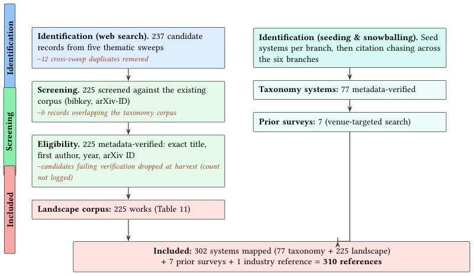
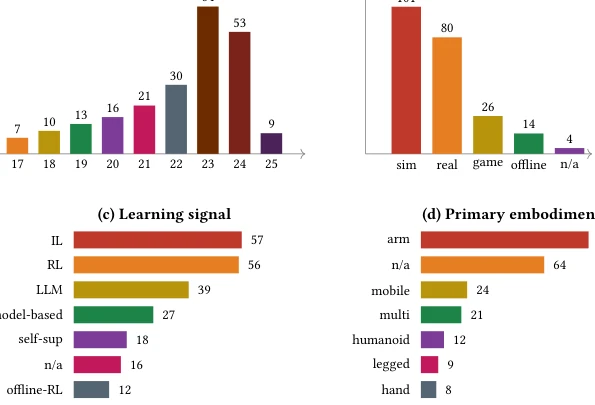
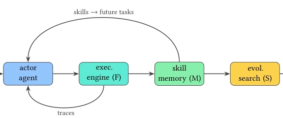
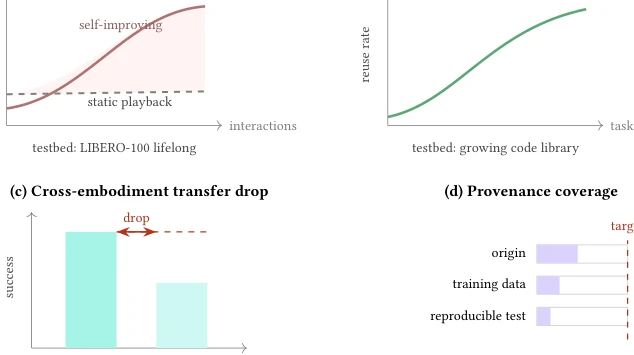

This review draws a 'black-and-white' map for the chaotic robot learning community, pitting VLA's frozen weights against code strategy's self-evolving skills. The highlight lies in grading 'code as policy' into a five-level ladder based on self-improvement degree, ranging from zero-shot to full closed-loop, with clear logic. However, critically speaking, this binary opposition is somewhat forced; VLA is actually learning skills too, just in a different manner. Furthermore, the 'skill economy' section is somewhat overhyped; the current market indeed only features static replay, far from true adaptability. As a review, it avoids piling up literature, instead supporting an analytical framework with 77 systems, which is commendable. However, treating 225 appendix works as a backdrop may lead readers to feel the main text is too concise. Overall, it is a viewpoint-driven map rather than a simple literature listing, which is very helpful for understanding the current state of the field.
The robot learning field is currently split into two camps: one relying on frozen-weight VLA models (e.g., RT-2 [18]), and the other relying on self-improvement through coding (e.g., Code-as-Policies [144]). Existing reviews either focus solely on VLA [161] or discuss only world models [41], with no one taking 'self-improvement degree' as the core axis. This results in uncertainty regarding how far code strategies can actually evolve and why the skill market (e.g., Unitree UniStore [243]) is limited to static replay. This paper aims to resolve this classification chaos, clarify five definitions of 'skills,' highlight the current pain points of lacking cross-embodiment transfer and adaptive capabilities, attempt to unify the debate between 'weights' and 'skills,' and provide direction for future research.
Fig. 2. The weights-versus-skills taxonomy of robot learning (all 77 systems). Each sub-family is one cell listing its systems, each with a trimmed form of the paper’s own title. Left fork = inspectable code / skills (§3.1, §3.4); the §3.1 cells are shaded by degree of self-improvement, from zero-shot to the full feedback+memory+search loop . Full per-system detail: Tables 2–6.
The core of the method is constructing a six-branch taxonomy based on 'weights vs. skills.' First, 302 systems were screened using the PRISMA process, among which 77 entered the main classification map. The key innovation lies in defining three mechanisms: Feedback, Memory, and Search, based on which code strategies are classified into five levels (from zero-shot to full closed-loop). For instance, ASPIRE [160] possesses all three simultaneously. Regarding skill libraries, it distinguishes between latent RL policies and retrievable code. Finally, an actionable future evaluation protocol is proposed, including metrics for success rate and skill reuse rate. Through tables, it compares the outputs (code/weights), evaluation domains (simulation/real), and self-improvement status of each system, clarifying the boundaries of each technology family to ensure the mutual exclusivity and completeness of the classification.

Fig. 4. Corpus construction in the PRISMA 2020 style [196]. The left column is the web-search stream behind the landscape corpus (Table 11), with recorded counts and inline exclusions (red) at each stage; the right column is the seed-and-snowball curation behind the weights–skills taxonomy corpus (Figure 2). Both streams feed the included set. Candidates whose metadata could not be verified were discarded at harvest time; their count was not logged, which we state rather than estimate (§2.1).

Fig. 6. Profile of the 225 landscape works (Table 11, Appendix A), counted directly from the taxonomy tags. (a) publication year, showing the surge in 2023–2024; (b) primary evaluation domain (simulation dominates, with real-robot a close second); (c) primary learning signal; (d) primary embodiment (“n/a” marks datasets, benchmarks, and simulators, which have none). The four profiles cut across both poles of the weights–skills axis (Figure 1), so their bars use a categorical palette that avoids the reserved pole colours (teal and blue). Counts are the exact column tallies of Table 11; they characterise the surveyed corpus, not the field’s total output.
This paper contains no traditional experiments, but instead conducts a comparative analysis of 77 systems. Through tables, it compares the outputs (code/weights), evaluation domains (simulation/real), and self-improvement status of each system. It focuses on analyzing the 'full closed-loop' cell (Fig 10), finding that only a few systems such as ASPIRE [160] and ENPIRE [272] occupy it. The proposed evaluation protocol (Fig 11) suggests using the LIBERO [149] and Open X-Embodiment [195] datasets to test lifelong learning and cross-embodiment transfer; metrics include success rate curves after autonomous interaction and skill library reuse rate, providing quantitative standards for future work. Additionally, it analyzes the publication years of each system and the distribution of evaluation environments, revealing the current status dominated by simulation.

Fig. 10. The full self-improving loop (§3.1.5): feedback (F) + memory (M) + search (S) combine into one open-ended loop (occupied by ASPIRE, ENPIRE, and RoboClaw). VLAs (§3.2) have no such loop.

Fig. 11. An actionable evaluation protocol for the future agenda (§6; Table 9). The panels are schematic: they show the axes and the target shape of each measurement, not measured results. (a) held-out success should rise with autonomous interaction for a self-improving system while a static playback skill stays flat, on LIBERO-style lifelong streams [149]; (b) a growing skill library should raise its reuse rate; (c) the drop in success from a training embodiment to an unseen one quantifies transfer, on Open X-Embodiment-style splits [195]; (d) each distributed skill should carry a verifiable origin, training-data statement, and reproducible test, a coverage today far below target for marketplace skills [243].